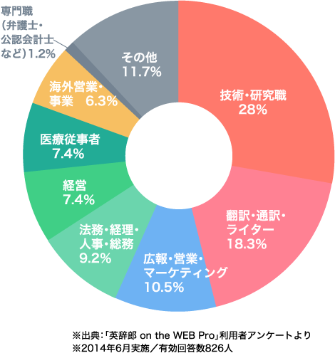
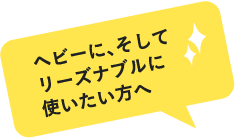

単語帳に登録
気になる単語を、20,000件まで登録可能。
メモ機能付きで、復習にも最適です。
検索結果に表示された見出し項目から、記録しておきたい項目を記録できるのが「単語帳」の機能です。登録できる項目数上限は、英和・和英合わせて、20,000件。タグを付けて分類し、管理することもできます。項目を選択して、「復習」する機能や「印刷」する機能もあり、見出し語にメモを加える機能もあるため、語彙力アップに役立ちます。
144万件以上の例文や用例を検索する「英辞郎 on the WEB Pro」なら、さまざまなシーンで使われている表現を知ることもできます。スモールトークのネタに使えそうなしゃれた文例も豊富。いつもそばにいる、有能なブレーンに。
➡クライアントとの商談、交渉、接待などでもお役立ち。
「英辞郎 on the WEB Pro」では、よく使う語や使える語彙だけではなく、検索で見つけた役立つ文例も、自分専用の単語帳に登録、復習することもできます。英語の初級者にもベテランにも、英語学習のためのパートナーに最適。
➡英語学習、英語資格の取得、リポートや論文作成などでもお役立ち。

「英辞郎 on the WEB Pro」は、実にさまざまなビジネスパーソンから注目されています。経営、経理、企画・マーケティング職から、法務、技術の専門職、さらには翻訳者、医療関係者にいたるまで、英語を使う各職種のプロフェッショナルたちに重宝されています。
いつでもどこでも使える強い味方。仕事への意識が高いプロ、特に英語を書いたり話したりする方には、「英辞郎 on the WEB Pro」がおすすめです。豊富な文例や、音声を聞く機能、共起表現（コロケーション）が分かる整列・頻度集計やあいまい検索も、使えば使うほど機能の便利さをご理解いただけることでしょう。 デスクではパソコンで、移動中はモバイル端末で。英語のブレーンやパートナーとして、あなたの仕事でご活用ください。
※インターネットにつながる環境が必要です。
頻度集計を使用して、名詞と一緒によく使われる動詞を調べたり、動詞に合う前置詞を調べたりしています。冠詞を外したり、原形に戻したりして集計できるのが便利ですね。「整列」機能では検索したキーワードが中心に並ぶので、副詞を置く場所を確認したり、that節を取ることができるかどうかをざっと確認したりするのに使っています。
IT関連／翻訳者
細田 裕美さん
仕事でメールを書くときは、単純な英和や和英検索、イディオムやフレーズのチェックはもちろんですが、「頻度集計」をよく使っています。なぜならば、この機能では使いたい単語（主に名詞）の前後の単語の繋がりの「自然さ」を簡単に確認出来るからです。自分の意図した内容をより自然な英語で相手に伝えたいときは、利用必須の機能ですね。
製造販売業／医薬品研究開発
池浦 秋実さん
１年間のロンドン留学が決まったときに、本格的な英文レポートを執筆することになり、「Pro」を使い始めました。より自然な表現にするために、頻度集計機能を使って、前置詞や名詞を選んで英文エッセーを書いたのですが、それを見たネイティブの先生に、「ほんとうに独力で書いたのか！」と驚かれました。
大学生・日本文学専攻
生田 慶穂さん
これは重要だと思う単語に出合ったとき、すぐに単語帳に登録できるので、英語の勉強にも役立っています。また「タグ機能」は、単語登録した語句をジャンル別に分類することができるので、覚えたい語句の整理にも役立ちますね。検索画面と単語帳を別タブで開いておく、などの工夫もしています。
知財関連／事業企画
金子 萱さん
検索結果に表示された見出し項目から、記録しておきたい項目を記録できるのが「単語帳」の機能です。登録できる項目数上限は、英和・和英合わせて、20,000件。タグを付けて分類し、管理することもできます。項目を選択して、「復習」する機能や「印刷」する機能もあり、見出し語にメモを加える機能もあるため、語彙力アップに役立ちます。
よく使う語、覚えたい語は単語帳へ。ログインすればアプリとも同期しているので移動中もモバイル端末で閲覧OK！
検索したキーワードの履歴が、最大50件保持される機能です。そのうち最新の10件が、検索結果ページの右側にリンクとして表示されるため、直前に検索したキーワードをスピーディに再検索できます。各画面上部にある「検索履歴」のアイコンから検索履歴に移動でき、英和・和英を問わず、検索した順に保持します。また、登録日時、見出し項目でソートも可能です。（「検索履歴」の「>>すべてを見る」のリンクからも、検索履歴に移動できます）
言葉を吟味したい時も、検索履歴があるので比較もスムーズ。
通常の検索では、「完全に一致する語句」がないと、「〜に該当する項目はみつかりませんでした」と表示されますが、あいまい検索では、表記ゆれもまとめて検索します。類似した表現が検索結果に表示されるので、うろ覚えの語句や、調べたい語の周辺を知りたいときに便利です。
類似度と一致率でソートできる。検索語と重なる部分は赤い文字で表示。
「整列」とは、検索キーワードを軸として整列させ、前後のテキストを同時に表示することにより、検索キーワードがどのような文脈で使われているかを一覧できる形式、KWIC（Keyword in Context、クウィック）で表示する機能です。
検索結果をキーワードの左右の１語目、２語目でソートしなおすことができ、その周囲の単語との関係を見やすく表示。
「頻度集計」とは、検索キーワードの前後に存在する単語の出現回数を「英辞郎 on the WEB Pro」に収録されているデータから集計し、出現頻度が高いものから順に最大で20件表示する機能です。これにより、検索キーワードと共起する傾向の強い語彙をその出現頻度順に一覧できます。
検索キーワードを中心にその前後に出現する単語の出現回数を集計し、多いものから順に表示。
モバイルデバイスのiPhone/iPad・Android端末にも対応しています。アプリから「英辞郎 on the WEB Pro」にログインすると、PCブラウザーと同じ検索結果がモバイル端末に適した形で表示されます。単語帳、検索履歴はPCブラウザーと同期しており、豊富な例文や語彙をいつでもどこでも手元で検索でき便利になりました。
一覧表示されたカードをタップすると、詳しい検索結果を見ることができる。
音声が収録されている項目には、アイコンが表示され、クリックすると、発音を確認することがきます。アルクが長年蓄積してきた膨大な英文データから「日本人英語学習者にとっての有用性」と「ネイティブスピーカーの使用頻度」を基準に選び出した「標準語彙水準ＳVＬ12000」に含まれる12,000語の音声に加えて、医療・技術系の専門用語約2,000語の音声が収録されています。
「職場では広告を非表示にしたい」というご要望にお応えして、有料版「Pro」では広告が表示されません。広告に気をとられることのない、快適な検索環境をご提供しています。
「会社の経費で利用するため、領収書が欲しい」というご要望にお応えして、ウェブ上で領収書を発行し、ご自身で印刷できる設定になっています。
※お申し込み翌月の11日以降、ウェブ上の「アカウントページ」からご発行いただけます。

| 「英辞郎 on the WEB Pro」 | 「英辞郎 on the WEB Pro Lite」 | 「英辞郎 on the WEB」 | |
|---|---|---|---|
| 価 格 | 3,630円（税込）／年 330円（税込）／月 |
無料（要登録） | 無料（登録不要） |
| 利用環境 | インターネット接続 | ||
| 使用アプリケーション | ウェブブラウザーを利用 （推奨環境はこちら） ※対応アプリ（ iOS / Android )あり |
||
| 検索対象とする英語データ | 語句と豊富な例文（144万件以上） | 語句と例文の一部（20万件以上） | 語句のみ |
| 【各 種 機 能】 | |||
| 単語帳 （検索結果の保存） |
（20,000件） | （100件） | |
| 単語帳 データの作成 |
（単語帳のメモ機能） | （単語帳のメモ機能） | |
| 履歴検索 | （50件まで） | （10件まで） | |
| あいまい検索 | |||
| 整列・頻度集計 | |||
| 例文別ページ表示※主に長文の例文データ | |||
| 小窓モード表示 | |||
| 音声再生 | （英和検索時、主要単語のみ） | （英和検索時、主要単語のみ） | |
| 【3サービス共通機能】 | |||
|
|||

１年間：3,630円（税込）
■「英辞郎 on the WEB Pro」を初めてお申し込みのお客様へ
初めてのお申し込み時（年額コース、月額コースのいずれか１回、初回のみ適用）に限り、申し込まれた日から、その月の月末までのご利用料金が無料になります。
■「月額コース」（契約中）からご変更（切り替え）のお客様へ
「月額コース」にてご利用中のID で、「年額コース」をお申し込みいただいた場合、「月額コース」の解約手続きは不要です（「月額」から「年額」に自動的にコースが切り替わります）。
「年額コース」へ切り替えた月のご利用料金は、「月額コース」での請求となり、「年額コース」でのご請求は切り替えた翌月分のご利用料金からとなります。ご利用料金を重複して請求することはございません。
１カ月：330円（税込）
有料サービスである「英辞郎 on the WEB Pro」の魅力をより多くの方に知っていただくため、無料登録のみで「英辞郎 on the WEB Pro」の機能の一部をお使いいただけるサービスです。アルクのサイトにご登録いただくだけで、どなたでもご利用になれます。お使いになれる機能 ≫


{kind=link}
{kind=link}
{kind=link}
{kind=link}
{kind=link}
{kind=link}
「英辞郎 on the WEB Pro」では、多様な文例、単語のつなぎ方も調べられるので、質の高い英文をスピーディーに書くことができます。仕事を加速させ、成果につなげるあなたの良きブレーンとして大活躍。
➡プレゼンテーション、報告書作成にもお役立ち。